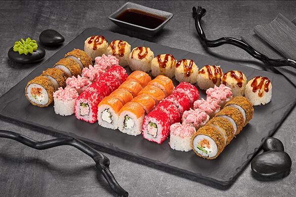

Суши и роллы - в чем же их отличие?
Казалось бы, суши и роллы давно перестали быть чем-то диковинным. Их можно попробовать в ресторанах с японской кухней, а при огромном желании приготовить самостоятельно дома. Благо, в интернете достаточно подробных рецептов и видеоинструкций. Однако до сих пор большинство гурманов не знает, в чем же разница между суши и роллами. Давайте разбираться.
Что такое суши?

Основным отличием суши от роллов является то, что на приготовление первых идут только отварной рис и морепродукты. Кто что любит – рыбка, угорь, креветки. Выглядит очень просто: рис в виде вытянутого колобка и поверх какой-нибудь обитатель моря. Иногда все это великолепие перехватывают полоской водоросли.
Стоит сразу сказать, что эти суши существенно отличаются от тех, которые подают в ресторанах России, Европы и Америки. В оригинале сюда идет сырая рыба. Именно поэтому между основой и начинкой в истинных японских суши васаби кладут в большом количестве, он обладает сильнейшим антимикробным свойством. С той же целью к столу подают имбирь.
В восточной Азии океан рядом, свежие морепродукты в большом изобилии каждый день привозят в порты. Поэтому нет недостатка в качественных ингредиентах. Добыть свежую не мороженую рыбу нужных пород вдалеке от моря – слишком дорогое удовольствие. Маринованные морепродукты – оптимальный вариант для наших ресторанов. Суши от этого не становятся менее вкусными и полезными. Для любителей японских блюд это отличная возможность угоститься любимыми суши и роллом, пусть они отличаются от оригинала и имеют европейский привкус.
Что такое роллы?
Роллы, по-японски макидзуси – имеют цилиндрическую форму, это разновидность суши. Рис, вместе с другими компонентами, завернут в листья нори. Ролл формируется таким образом: в центр кладут начинку, какую пожелают. В отличие от суши он «любит» овощи – огурец и даже фрукты – авокадо. Обязательный элемент ролла – рисовый слой. Снаружи все это обернуто листом нори.
Роллы дают большой полет для фантазии. Их делают холодными, горячими, с овощами, рыбой и даже мясом. Часто по внешнему слою ролла идет рис, который для большего вкуса оборачивают рыбой или угрем.
В отличие от суши, которые готовят исключительно руками, роллы делают при помощи циновки. На нее последовательно выкладываются все компоненты. В последнюю очередь – начинку будущего ролла. После циновку аккуратно скатывают, формируя длинный рулет. Острым ножом его нарезают на отдельные роллы.
Несмотря на внешнюю простоту японские мастера, специализирующиеся на роллах и суши, учатся годами, чтобы достичь пика совершенства. И даже через десять лет безупречной работы будет считаться, что повар еще не приготовил свои самые лучшие суши и ролл.
На исторической родине роллов и суши рецептов этих блюд превеликое множество. Перестав быть исключительно традиционной японской пищей и обретя популярность у жителей России и Америки, их рецептов стало еще больше. Европейские повара с азартом экспериментируют, добавляя в исконно японские роллы свои «изюминки», создавая новые суши. Отчего популярность этого блюда только возрастает.
Так, самые распространенные роллы Калифорния и Филадельфия, как уже ясно из их названий, появились вовсе не в стране восходящего солнца. Их автор родился далеко за ее пределами – на Западе. Японцы новые вариации суши и роллов, возникающие по всему миру, принимают нехотя. Стараясь придерживаться традиций своей страны. При этом признают, что в европейском виде суши и роллы тоже хороши. «Вкусно ведь!» – говорят многие из них.
На вкус и цвет товарищей нет, некоторые вообще считают, что лучшие суши – это хачапури! Кстати, роллы считаются одним из видов суши, поэтому вопросы типа «что вкуснее: роллы или суши?» похожи по своей структуре на «что лучше, коньяк или алкоголь?». Роллы, в отличие от классических видов суши, лучше сохраняют свою форму. Они плотно закручены в слой водорослей. Поэтому легче выдерживают неумелые манипуляции палочками, сильное обмакивание в соевый соус и прочие процедуры, которым их подвергают перед съедением. Если Вы первый раз решили заказать себе такое блюдо и терзаетесь муками выбора, то берите роллы.